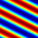

2025-10-26 / LinearAlfvenWave-GPU
- Build/Test information:
- Build directory: .
- Parallel run
- Files:
- Dimensionality: 3
- Compilation:
Successful
- Compilation time: 253.935 s
- Compilation command:
cmake --build /data/mash/cche/azp-agent-in-docker-cuda/azp-agent-avatargpu/regression-tests/quokka/builddir -j 16 -- test_alfven_wave_linear
- make output
- Execution:
- Execution time: 43.390 s
- Execution command:
mpirun -n 1 ./LinearAlfvenWave-GPU.ex alfven_wave_linear_regression.in plotfile_prefix=LinearAlfvenWave-GPU_plt checkpoint_prefix=LinearAlfvenWave-GPU_chk amr.checkpoint_files_output=0
- execution output
- Comparison:
/data/mash/cche/azp-agent-in-docker-cuda/azp-agent-avatargpu/regression-tests/amrex/Tools/Plotfile//fcompare.gnu.ex --abort_if_not_all_found -n 0 /data/mash/cche/azp-agent-in-docker-cuda/azp-agent-avatargpu/regression-tests/quokka-benchmarks/LinearAlfvenWave-GPU_plt00998 LinearAlfvenWave-GPU_plt00998
/data/mash/cche/azp-agent-in-docker-cuda/azp-agent-avatargpu/regression-tests/amrex/Tools/Postprocessing/C_Src//particle_compare.exe /data/mash/cche/azp-agent-in-docker-cuda/azp-agent-avatargpu/regression-tests/quokka-benchmarks/LinearAlfvenWave-GPU_plt00998 LinearAlfvenWave-GPU_plt00998 tracer_particles
| variable name | absolute error | relative error |
|---|
| | (||A - B||) | (||A - B||/||A||) |
|---|
| level = 0 |
| gasDensity | 1.179945031e-12 | 1.179945029e-12 |
| x-GasMomentum | 3.877837725e-13 | 1.086422248e-06 |
| y-GasMomentum | 4.998920624e-13 | 6.999739303e-07 |
| z-GasMomentum | 5.20010692e-13 | 8.732843906e-07 |
| gasEnergy | 7.021050408e-13 | 5.015035994e-13 |
| gasInternalEnergy | 2.160716051e-12 | 2.400795605e-12 |
| x-BField | 1.648681192e-13 | 3.717653096e-13 |
| y-BField | 1.6298074e-13 | 2.347772907e-13 |
| z-BField | 1.314504061e-13 | 2.318564817e-13 |
